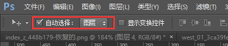
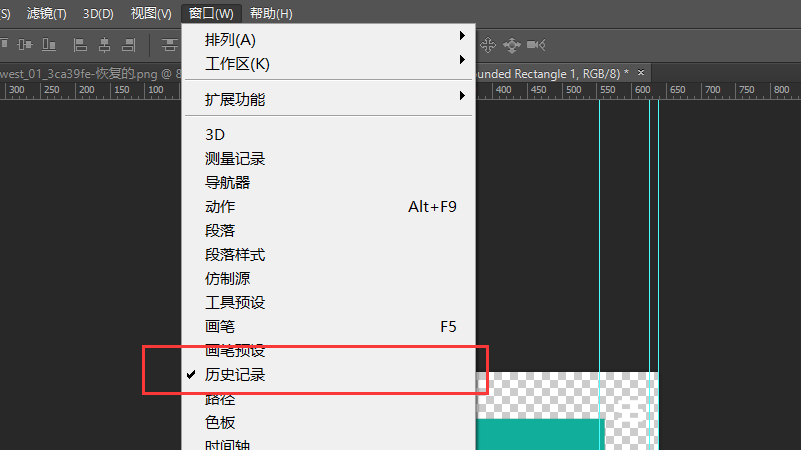
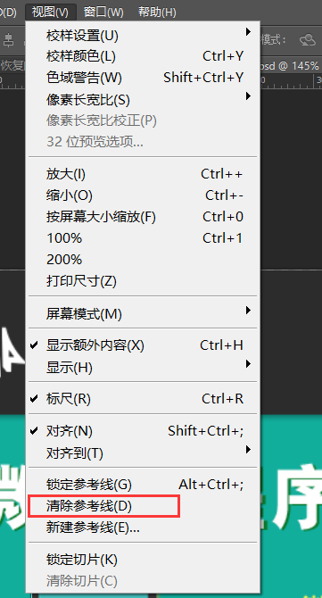
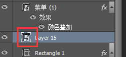
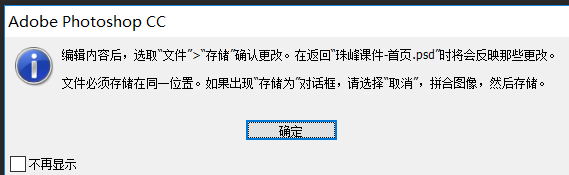
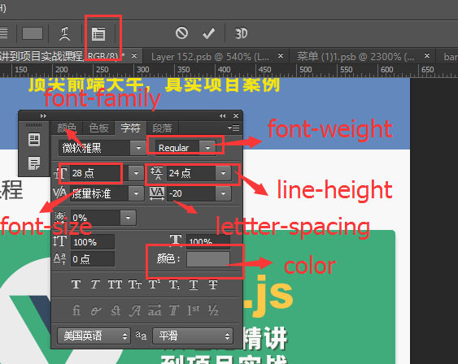
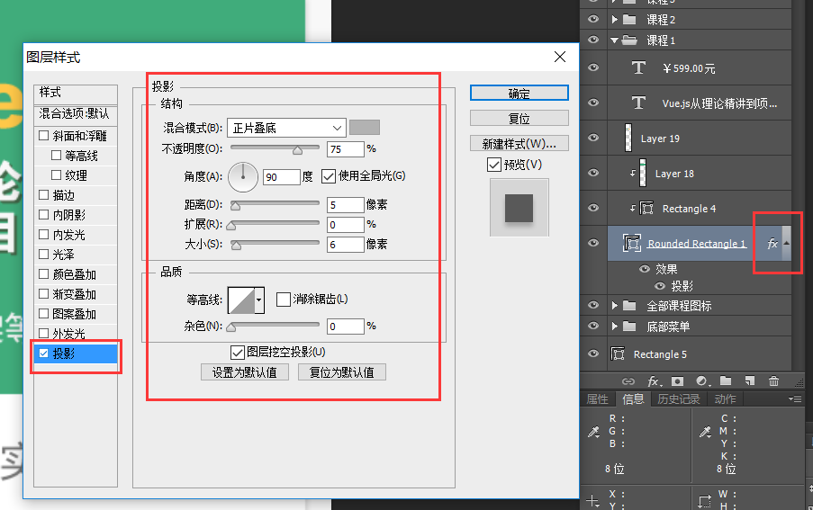

第三周第三天笔记
1.PS 工具的简单使用
如何打开设计稿
- 1.把设计稿直接拖到设计稿中直接松开即可
- 2.PS => 文件 => 打开 ctrl + O
如何缩放设计稿
- alt + 鼠标滚轮
- ctrl + 键盘的加减符号
如何拖到设计稿
- 按住空格键 - 鼠标会出现一个小手的形状 - 这样就可以任意拖到设计稿
- 移动面板下（V） - 自动选择勾上 - 图层

如何回到设计稿原始的状态
- 窗口 - 历史记录 (这里记录了我们的每一步操作)

如何清除设计稿的参考线
- 视图 - 清除参考线 alt + V + D

如何切图
- 选中图层 ，以开关图层前面的小眼睛去测试是不是我们想要的图层
- 如果找到想要的图层了，就在图层上鼠标右键 ，有一个转换为智能对象
- 双击智能对象缩览图 - 确定 - 就可以得到我们想要的图层


如何保存图片
- 文件 - 存储为web所用的格式
- ctrl + shift + alt + S 另存为
如何看虚线框的大小
- ctrl + 图层透明的区域就会出现虚线框
- 信息面板（F8） 可以虚线框的大小
- ctrl + D 取消虚线框
如何选中设计稿上的文字内容
- T 文字工具面板 - 在文字上双击即可全选文字内容
- ctrl + enter 跳出选择的文字内容

2.手机端常用的设计稿的尺寸
参照IPhone5/5s 机型的设计稿
分辨率： 320 * 568
DPR: 2.0
设计稿尺寸: 640 * 1136 （单屏）参照iphone 6 机型的设计稿
分辨率: 375 * 667
DPR : 2.0
设计稿尺寸: 750 * 1334 （单屏）参照iphone6 Plus 机型的设计稿
分辨率: 414 * 736
DPR: 3.0
设计稿的尺寸： 1242 * 2208 （单屏）
3.box-shadow 盒子阴影
- 1.x轴的偏移量
- 2.y轴的偏移量
- 3.阴影的模糊半径
- 4.阴影模糊半径的大小
- 5.阴影的颜色

4.border-radius 圆角
- 顺时针方向 左上 - 右上 - 右下 - 左下

5.长度单位 rem
相对单位，相对于根元素(即html元素)font-size计算值的倍数
rem （font-size of root element ）根元素的字体大小
根元素html的默认的字体大小是16px；
我们一般給根元素设置font-size:100px， 为了方便计算，大小浏览器默认的最小字体12px ；